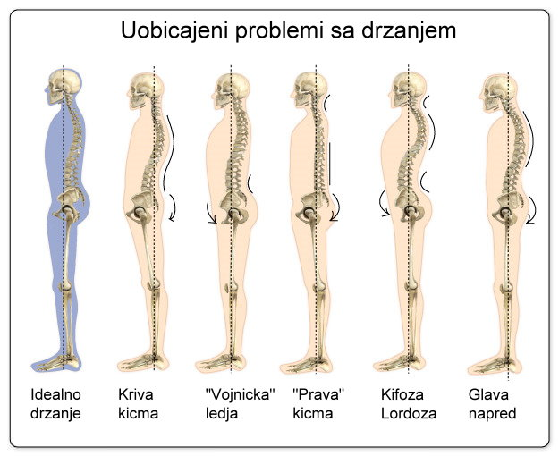

Domino efekat - problemi ne staju ovde, oni se prenose i na kukove, kolena, stopala, na probleme sa disanjem.
Veliki problem kod Multiple skleroze je poremećaji ravnoteže i koordinacije.
Na zalost, svakodnevnica je takva da se cesto nalazimo u situacijama gde smo u pogrbljenom polozaju (ispred kompjutera, za volanom, zbog sve cesceg koriscenja mobilnih telefona…) Posto organizam nista ne zaboravlja, a ponajmanje misici na polozaje koji se cesto ponavljaju, u situaciji smo da nam se cesto desavaju bolovi i napetost u gornjem delu ledja, u donjem delu ledja, sve cesca glavobolja. Jedan od razloga je losa postura.

Ukoliko je vase drzanje najblize drugoj, petoj ili sestoj posturi, na pravom ste mestu!